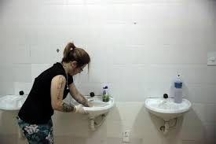
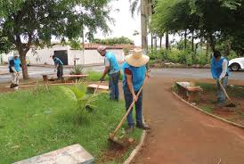
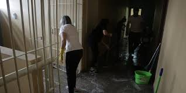

Fundação
A APAC nasceu em 1972, na cidade de São José dos Campos - SP. A princípio era um grupo de voluntários cristãos liderados pelo advogado e jornalista Dr. Mário Ottoboni. O grupo de apoio iniciou no presídio de Humaitá, com a intenção de evangelizar e dar
apoio moral aos presos. Nesse começo a sigla APAC sigrnificava Amando o Próximo Amarás a Cristo.
No ano de 1974, a equipe que constituía a Pastoral Penitenciária, concluiu que somente uma entidade juridicamente organizada seria capaz de enfrentar as dificuldades e as vicissitudes que permeavam o dia a dia do presídio
e assim foi instituída a APAC - Associação de Proteção e Assistência aos Condenados. Uma entidade jurídica sem fins lucrativos, com o objetivo de auxiliar a Justiça na execução da pena, recuperando o preso,
protegendo a sociedade socorrendo as vítimas e promovendo a Justiça restaurativa.
Atualmente
Hoje, a APAC é uma entidade civil de direito privado, com personalidade jurídica própria, dedicada à recuperação recuperação e à reintegração social dos condenados a penas privativas de liberdade. Ela ainda
opera como entidade auxiliar do poder Judiciário e Executivo, respectivamente, na execução penal e na administração do cumprimento das penas privativas de liberdade.
O objetivo da APAC é promover a humanização das prisões, sem perder de vista a finalidade punitiva da pena, evitando a reincidência no crime e oferecerecendo alternativas para o condenado se recuperar. Na instituição o
cumprimento de pena é individualizado, por isso as APACs são pequenas unidades, construídas nas próprias comunidades onde os recuperandos cumprem sua pena. São unidades idealizadas para receber no máximo 200 recuperandos.
Um presídio que aplica a metodologia APAC é infinitamente mais vantajoso para o Estado, visto que um preso na APAC custa um terço do valor gasto no sistema comum. Além disso, a construção de uma APAC é muito mais barata
que a construção de um presídio comum. Os resultados positivos tais como baixo índice de reincidência, baixo custo, ausência de violência e rebeliões, poucas fugas, têm contribuído para que a metodologia APAC seja conhecida e aplicada.
O que fazemos aqui na APAC?
Na APAC os presos são chamados de recuperandos e são corresponsáveis por sua recuperação. A presença de voluntários é fundamental oferecendo aos recuperandos a assistência espiritual, médica, psicológica
e jurídica. Na APAC, a segurança e a disciplina são feitas com a colaboração dos recuperandos, tendo como suporte alguns funcionários e voluntários, sem policiais ou agentes penitenciários.
Aqui, temos uma rotina diária que inicia às 6 da manhã e termina às 10 da noite. Durante o dia todos trabalham, estudam e se profissionalizam, evitando a todo custo a ociosidade. Com uma disciplina rígida, a APAC conta
com um conselho formado por recuperandos que contribui decisivamente para a ordem, o respeito e o seguimento das normas e regras.
Desde cedo, as refeições são planejadas com os funcionários e recuperandos responsáveis pelas atividades na cozinha.


Na APAC também contamos com o auxílio de recuperandos e vonluntários pare realizae a limpeza do local.
  Aqui nós focamos em recupração! Por isso disponibilizamos cursos profissionalizantes palestrado por voluntários.


Serviços de beleza, como maniure, barbearia, cabeleleiro e outros também são praticados de recuperando para recuperando.


É de extrema importancia que os residentes da APAC tenham contato com famíliares, assim, diversos encontros são disponibilizados.


Atividaes culturais como filmes, pinturas e leitura também ajudam a tortar a estadia mais fácil e motivadora!


Você também pode nos ajudar doando!
POR TELEFONE OU E-MAIL
Número: (35) 3425-8993
E-mail: apacpousoalegre@fbac.com.br
Horários de atendimento: Segunda a Sexta 08:00 - 17:00
DIRETAMENTE NA INSTITUIÇÃO
Endereço: Rodovia MG 290, KM 05 - Bairro Anhumas, Pouso Alegre - MG
Horários de atendimento: Segunda a Sexta 08:00 - 17:00